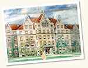

Browse Buildings & Grounds

- 1st Regiment Armory (1)
- Abbott Memorial Hall (51)
- Accelerator Building (112)
- Administration Building (124)
- Administration Building, Proposed (4)
- American Bar Center (6)
- American Meat Institute (3)
- Anatomy Building (20)
- Argonne Cancer Research Hospital (119)
- Argonne National Laboratory (56)
- Armour Clinical Research Building (6)
- Atomic Pile (4)
- Bank Run (1)
- Baptist Union Theological Seminary Engraving (1)
- Barnes Laboratory (41)
- Barnes Laboratory, Proposed (1)
- Bartlett Gymnasium (116)
- Beatrice Hotel (2)
- Beecher Hall (7)
- Belfield Hall (16)
- Ben May Laboratory (6)
- Bernard Mitchell Hospital (4)
- Billings Hospital (123)
- Blackstone Hall (4)
- Blaine Hall (77)
- Bobs Roberts Hospital (53)
- Bond Chapel (89)
- Botany Building (34)
- Botany Pond (85)
- Breckinridge Hall (1)
- Buildings (1)
- Burton-Judson Courts (235)
- C Bench (28)
- Calvert House (1)
- Camp Douglas (1)
- Campus (1)
- Center for Continuing Education (62)
- Charles Gilman Smith Hospital (64)
- Charles H. Judd Hall (57)
- Chicago (76)
- Chicago Coliseum (1)
- Chicago College Club (1)
- Chicago Development (52)
- Chicago Dwelling Association (22)
- Chicago Housing (144)
- Chicago Housing Authority (2)
- Chicago Lying-In Hospital (53)
- Chicago Neighborhoods (174)
- Chicago Public Library (40)
- Chicago Scenes (120)
- Chicago Scenes, Soldier Field (1)
- Chicago Stores (6)
- Chicago Theological Seminary (22)
- Chicago-Old Town (44)
- Class of 1896 (1)
- Class of 1898 (3)
- Class of 1906 (15)
- Classics Building (37)
- Clinton National Laboratory (Tennessee) (1)
- Cobb and Divinity Halls (14)
- Cobb Gate (26)
- Cobb Hall (104)
- Cobb Hall and Dormitories (2)
- Cochrane-Woods Art Center (43)
- Colver Houses (1)
- Computation Center (38)
- Congress Street Expressway (7)
- Crerar Library (8)
- Crerar Library (Illinois Institute of Technology) (29)
- Crerar Library (Marshall Field Building) (8)
- Crerar Library (Randolph Street) (40)
- Crerar Library (University of Chicago) (5)
- Culver Hall (16)
- Cummings Life Science Center (6)
- Dallas B. Phemister Hall (25)
- David and Alfred Smart Museum of Art (8)
- Disciples Divinity House (14)
- Divinity Dormitories (31)
- Dudley Field (8)
- Eckhart Hall (87)
- Edward Sanitarium (1)
- Ellis Hall (26)
- Experimental Biology Building (73)
- Faculty Apartments (67)
- Field House (59)
- Field House (Renovation) (49)
- Flagpole (2)
- Foster Hall (46)
- Fraternity Houses (30)
- Garfield Park Conservatory (4)
- Gargoyles (16)
- Garrett Biblical Institute (1)
- General Campus Views (379)
- George Herbert Jones Laboratory (65)
- Goldblatt Memorial Hospital (26)
- Goldblatt Pavilion (31)
- Goodspeed Hall (2)
- Green Hall (18)
- Greenwood Hall (2)
- Gymnasium (Old) (11)
- Harper Court (33)
- Harper Library (425)
- Harper, William Rainey, Youth (6)
- Haskell Hall (55)
- Hedwig Loeb Photograph Album (49)
- Henry Hinds Laboratory (15)
- Hicks-McElwee Hospital (25)
- High Altitude Cosmic Ray Observatory (New Mexico) (1)
- High Energy Physics Building (2)
- Hitchcock Court (8)
- Hitchcock Hall (46)
- Hitchcock Hall and Court (1)
- Hospitals and Clinics (122)
- Housing Court (1)
- Hull Court (96)
- Hutchinson Court (73)
- Hutchinson Hall (31)
- Hyde Park (252)
- Hyde Park-Kenwood (139)
- Hyde Park-Kenwood-Woodlawn (9)
- Hyde Park-Woodlawn (2)
- Ida Noyes Hall (173)
- Illinois Central Railroad (12)
- Illinois Children's Home and Hospital (6)
- Illinois Institute of Technology (3)
- Industrial Areas (3)
- Industrial Relations Center (61)
- Ingleside Hall (18)
- International House (148)
- Jackson Park (62)
- John J. Mitchell Tower (68)
- Joseph Regenstein Library (164)
- Joseph Regenstein Library, Proposed (5)
- Kelly Hall (8)
- Kent Chemical Laboratory (92)
- Kenwood (71)
- Kersten Physics Teaching Center (58)
- Kimbark Hall (7)
- Kings College Chapel, Cambridge, University (1)
- Laboratories (53)
- Laboratory Schools (10)
- Laird Bell Law Quadrangle (91)
- Lake Meadows (21)
- Landscaping, Beatrix Farrand (2)
- Law School, Stuart Hall (Old) (4)
- Lexington Hall (10)
- Library (Old) (2)
- Lincoln Park (21)
- Little Pierce (5)
- Lutheran School of Theology (3)
- Magdalen College, Oxford University (3)
- Management Center, Proposed (3)
- Mandel Hall (36)
- Marshall Field Apartments (1)
- McCormick Theological Seminary (3)
- McDonald Observatory (66)
- Mead Residence (1)
- Meadville Lombard Theological School (5)
- Metropolitan Housing and Planning Bus Tour (6)
- Michael Reese Hospital (9)
- Midway Gardens (6)
- Midway Studios (52)
- Midwest Inter-Library Center (9)
- Mill Road Farm (36)
- Morgan Park Academy (17)
- Murals (2)
- Museum of Science and Industry (7)
- Natatorium, Proposed (7)
- National Accelerator Laboratory (1)
- National Opinion Research Center (NORC) (2)
- Neurological Sciences Building, Proposed (1)
- Normal Park (22)
- North Quadrangle (2)
- Nuclear Energy (16)
- Nurses' Home, Proposed (1)
- Old University of Chicago (23)
- Old University of Chicago, with Camp Douglas (1)
- Oriental Institute (151)
- Parlors (2)
- Peck Pavilion (48)
- Pick Hall (81)
- Power Plant (38)
- Power Plant (Old) (23)
- President's House (27)
- Press and Power House (1)
- Press Building (57)
- Promontory Point (1)
- Public Administration Center (89)
- Quadrangle Club (15)
- Quadrangle Club (Old) (4)
- Research Institutes (62)
- Research Institutes, Laboratory for Astrophysics and Space Research (19)
- Residence Hall, Women's (4)
- Reynolds Club (55)
- Ricketts Laboratory North (6)
- Ricketts Laboratory South (1)
- Robie House (43)
- Rockefeller Chapel (499)
- Rosenwald Hall (75)
- Rubloff Intensive Care Tower (1)
- Rush Medical College (25)
- Ryerson Physical Laboratory (130)
- Science Quadrangle (2)
- Sculpture (20)
- Searle Chemistry Laboratory (8)
- Settlement (2)
- Shanty (3)
- Shimer College (1)
- Shop Building (2)
- Shoreland (2)
- Snell Hall (5)
- Social Science Research Building (49)
- Social Service Administration Building (76)
- Social Service Administration Research Center (3)
- Sonia Shankman Orthogenic School (103)
- South Parks (5)
- Southside Beaches (11)
- Stagg Field (New) (46)
- Stagg Field (Old) (209)
- Stained glass (1)
- Stanley R. Pierce Hall (61)
- Statistics-Mathematics Building (3)
- Stephen A. Douglas (3)
- Stuart Hall (87)
- Student Temporary Housing (13)
- Sunny Gymnasium (34)
- Surgery Brain Research Institutes (90)
- Surgery Building (1)
- Swift Hall (59)
- The College, South Campus (16)
- Toddlers (1)
- Tot Lot Block Project (11)
- Tower Group (51)
- University Chapel, Proposed (2)
- University Extension (8)
- University High School (96)
- University Housing (24)
- University of Chicago (23)
- Walker Museum (39)
- Wallach Ulcerative Colitis Laboratory (5)
- Washburne Avenue (13)
- Washington Park (60)
- Whitman Laboratory (9)
- Wieboldt Hall (44)
- William Rainey Harper, Youth (5)
- Women's Quadrangle (36)
- Women's Residence Hall, Proposed (3)
- Woodlawn (9)
- Woodlawn Social Services Center (24)
- Woodward Court (166)
- Wyler Children's Hospital (16)
- Yerkes Observatory (225)
- Young Memorial Building (11)
- Zoller Research Facility (4)
- Zoology Building (15)